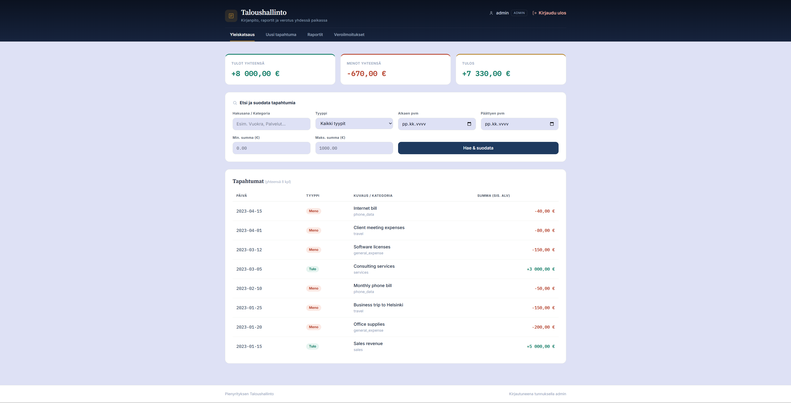
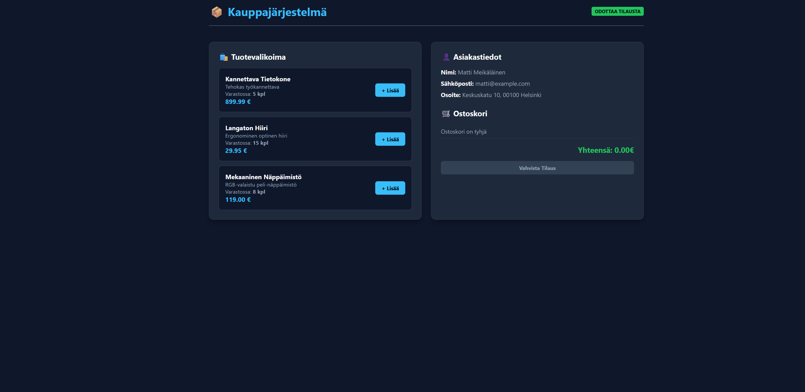
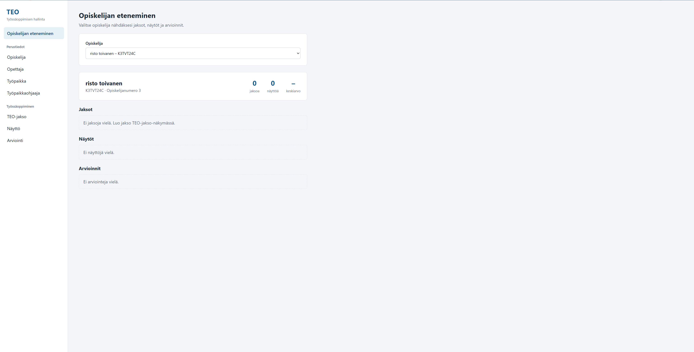

projektit

Huoltovarauskalenteri
Huoltovarauskalenteri, joka on toteutettu oppilastyönä yritykselle.
Avaa projekti
Ticket-järjestelmä
Henkilö voi luoda uuden ticketin, antaa sille prioriteetin ja kuvata ongelman.
Avaa projekti
Taloushallinto
Pienyrityksen taloushallintojärjestelmä, joka sisältää käyttöliittymän ja tietokannan.
Avaa projekti
Verkkokauppa
verkkokauppajärjestelmä, joka sisältää käyttöliittymän ja tilaus vaihtoehdot.
Avaa projekti
Teo-järjestelmä
tallentaa opiskelijoiden tiedot, hallita työpaikkoja, hallita työpaikkaohjaajia, luoda TEO-jaksoja, suunnitella näyttöjä, tallentaa arviointeja, seurata opiskelijoiden etenemistä.